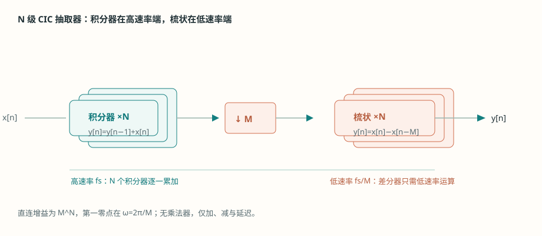
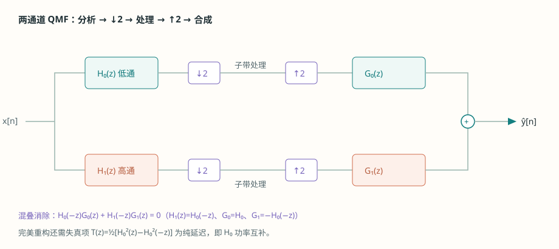

Signal · System · Insight / 13
多级采样率转换：CIC、半带滤波器与滤波器组
把一次巨大的抽取拆成若干级，让每一级都用最适合其速率的滤波器结构。
高倍率抽取为什么不能一级做完？
假设要把 122.88 MHz 的 ADC 数据降到 48 kHz，总抽取因子为 2560。如果只用一个抗混叠低通加一次 2560 倍下采样，那么这个低通的过渡带必须窄到约 1/2560 的归一化宽度——对应的 FIR 长度会达到万阶量级，无论乘法器还是存储都无法接受。
更聪明的做法是分级抽取：每一级只抽取一个小倍数，让每一级滤波器的过渡带都相对宽松，并且把尽量多的运算放在已经降速的一侧。本章介绍三种支撑这种分级策略的构件：CIC 滤波器（无乘法器）、半带滤波器（一半系数为零），以及作为分解/合成基础的滤波器组。
CIC：只用加法与延迟
CIC（Cascaded Integrator-Comb，级联积分梳状）滤波器由两种极简模块构成：积分器 （一个累加器）与梳状差分器 。二者只用加、减和延迟，没有乘法。
单级 CIC 的传递函数是一个长度为 M 的滑动平均：
式（1）：分子是差分器（梳状），分母是积分器；两者在 z 域互为逆运算。
级联 N 级后，幅频响应取 N 次幂，且直流增益为 M^N：
式（2）：ω=0 处值为 M^N；第一零点在 ω=2π/M。
工程上几乎不用单级 CIC：它的第一旁瓣只比主瓣低约 13 dB（矩形窗旁瓣的典型值），作为抗混叠滤波器远不够。级联 N 级后，第 N 个主瓣以外的衰减大约每级增加 13 dB，所以通常用 3～5 级。另一个要点是结构安排：积分器放在抽取前的高速率端，梳状差分器放在抽取后的低速率端，后者只需在 fs/M 速率上运行。

两个常见陷阱：（1）CIC 的直流增益是 M^N，必须做增益补偿，否则定点实现会溢出；（2）CIC 通带内并不平坦（有滚降），通常需要在后级接一个补偿滤波器来抵消。忽略这两点会让通带平坦度与幅度严重偏离。
半带滤波器：一半系数为零
半带滤波器（half-band filter）是专为2 倍抽取设计的实系数对称 FIR。它有一个直接可验证的结构特征：以中点为中心，每隔一个抽头就有一个零。设长度 N 为奇数、中心 ，则除 h[α]=1/2 外：
式（3）：等价于频域条件 H(z)+H(−z)=z^{−α}。
由此得到三个实用性质：通带边缘 ωp 与阻带边缘 ωs 关于 π/2 对称（ωp+ωs=π）；通带纹波与阻带纹波相等；大约一半抽头为零。在 2 倍抽取中，多相分解使其中一条支路退化为纯延迟，于是只有一条非平凡支路需要乘法，每输出样本的乘法数约为 N/4（相比一般 FIR 的 N）。
这也说明半带滤波器只在 2 的幂次链中高效：它是 8→4→2→1 这类逐级降速的天然构件。设计时可用窗函数或等波纹方法逼近这个结构条件，但“一半系数为零”只有在长度与对称性匹配时才严格成立。
多级抽取链
把 CIC、半带与通用 FIR 组合起来，就是实际接受的分级抽取结构。以 122.88 MHz → 48 kHz（总因子 2560）为例，一种可行的级联是：
| 级 | 类型 | 抽取因子 | 输出速率 |
|---|---|---|---|
| 1 | CIC（多级） | 64 | 1.92 MHz |
| 2 | 半带 FIR | 2 | 960 kHz |
| 3 | 半带 FIR | 2 | 480 kHz |
| 4 | 半带 FIR | 2 | 240 kHz |
| 5 | 半带 FIR | 2 | 120 kHz |
| 6 | 有理数 FIR（5/2） | 2.5 | 48 kHz |
各级因子相乘：64 × 2 × 2 × 2 × 2 × 2.5 = 2560；速率链 122.88 MHz ÷ 64 = 1.92 MHz，逐级降为 48 kHz，都可由算式核对。分级的好处是每一级的过渡带都只相对于本级的采样率要求，而不是相对总因子，因此滤波器阶数远低于单级方案；同时 CIC 级不消耗乘法器，半带级自带一半零系数。
教学示意：“分级后总计算量远低于单级”是结构性结论，具体倍数取决于每级阶数、字长与硬件乘法器数量，不能用一个固定百分比代替；实际系统应逐级核算乘加数和定点动态范围。
两通道正交镜像滤波器组
滤波器组把一个信号分成多个子带，处理后再合回。最简单的两通道结构：分析滤波器 H₀（低通）与 H₁（高通）各接一个 2 倍下采样；合成端先 2 倍上采样，再过 G₀、G₁ 相加。它的输出可以写成两项：
式（4）：第二项是下采样/上采样引入的混叠（镜像）项，它必须被消掉。
令第二项系数为零，就得到混叠消除条件 。选择
式（5）：这一选择对任意 H₀、H₁ 都能把式（4）第二项消为零。
再加上经典的镜像关系 ，就得到正交镜像（QMF）家族。此时失真项变成
式（6）：完美重构要求 T(z)=z^{−D}，即 H₀ 为功率互补（半带型）滤波器。
这里有一个容易被简化的地方：式（5）只保证混叠消除；要实现完美重构，还必须让失真项成为纯延迟。经典 QMF 只做到近似重构，严谨的完美重构需要其共轭/正交版本（如 CQF、格型滤波器组）或直接以功率互补条件设计 H₀。滤波器组广泛用于子带编码（如 MPEG 音频的余弦调制滤波器组）、SDR 数字信道化与离散小波变换。

交互：CIC 级数与旁瓣衰减
固定抽取因子 M=8，只改变级联级数 N，观察 N 级 CIC 的幅度响应（以直流增益归一化）。每增加一级，阻带旁瓣就压得更低。
可交互实验：N 级 CIC 的幅频响应
横轴 ω：0 → π。M=8 时第一零点在 ω=2π/8=0.785 rad，曲线由解析式 |sin(Mω/2)/sin(ω/2)| 幂次计算，不依赖网络。
单级 CIC 的第一旁瓣约为 −13 dB；N 级后可近似看作每级再降约 13 dB。这一数字来自矩形窗的旁瓣水平，是量级估计而非严格阻带指标——真实系统还需考虑通带滚降、整数位溢出与补偿滤波器。
from math import sin, pi, log10
def cic_db(M, N, w):
s = abs(sin(M * w / 2) / sin(w / 2)) ** N
return 20 * log10(max(s, 1e-12)) - N * 20 * log10(M)
# 直流增益为 M^N；第一零点在 2 pi / M
print(20 * log10(8 ** 4), "dB DC gain for M=8, N=4")
print(round(cic_db(8, 4, 3 * pi / 8), 2), "dB near first sidelobe")完整可运行测试（13_cic.py）验证了：单级 CIC 冲激响应等于长度 M 的全 1 序列；直流增益为 M^N；半带滤波器的 H(z)+H(−z) 等于单延迟项；多级抽取因子相乘为 2560。
边界与易错点
- CIC 的直流增益 M^N 必须补偿，否则定点实现会溢出。
- CIC 通带不平坦，后级通常需要补偿滤波器；不要把它当作平坦低通。
- “毎级约 13 dB”是矩形窗旁瓣的典型值，不是任意 M、N 下的精确阻带衰减。
- 半带滤波器只在长度与对称性匹配时才严格满足一半系数为零。
- QMF 的符号关系只消除混叠；完美重构还需要功率互补/正交条件。
自检：一个 4 级 CIC、M=16，直流增益是多少 dB？如果 ADC 输入是满幅 16 位定点数，直接输出会溢出多少位？
参考资料与接口
- MIT OCW · Discrete-Time Signal Processing：多级抽取、半带滤波器与滤波器组理论。
- SciPy · firwin：窗函数法设计 FIR（包括半带型低通的通/阻带约束）。
- SciPy · resample_poly：有理数重采样，与本级联末级对应。